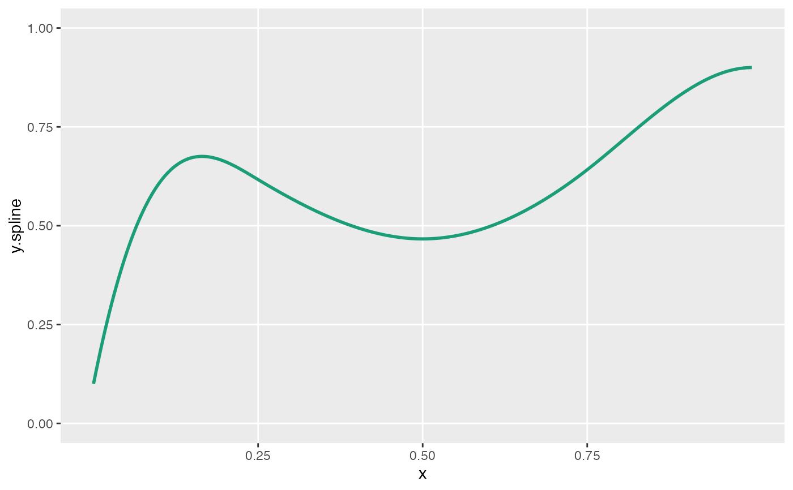

Generate spline curves
genSpline(
dt,
newvar,
predictor,
theta,
knots = c(0.25, 0.5, 0.75),
degree = 3,
newrange = NULL,
noise.var = 0
)data.table that will be modified
Name of new variable to be created
Name of field in old data.table that is predicting new value
A vector or matrix of values between 0 and 1. Each column of the matrix represents the weights/coefficients that will be applied to the basis functions determined by the knots and degree. Each column of theta represents a separate spline curve.
A vector of values between 0 and 1, specifying quantile cut-points for splines. Defaults to c(0.25, 0.50, 0.75).
Integer specifying polynomial degree of curvature.
Range of the spline function , specified as a string with two values separated by a semi-colon. The first value represents the minimum, and the second value represents the maximum. Defaults to NULL, which sets the range to be between 0 and 1.
Add to normally distributed noise to observation - where mean is value of spline curve.
A modified data.table with an added column named newvar.
ddef <- defData(varname = "age", formula = "0;1", dist = "uniform")
theta1 <- c(0.1, 0.8, 0.6, 0.4, 0.6, 0.9, 0.9)
knots <- c(0.25, 0.5, 0.75)
viewSplines(knots = knots, theta = theta1, degree = 3)

set.seed(234)
dt <- genData(1000, ddef)
dt <- genSpline(
dt = dt, newvar = "weight",
predictor = "age", theta = theta1,
knots = knots, degree = 3,
noise.var = .025
)
dt
#> Key: <id>
#> id age weight
#> <int> <num> <num>
#> 1: 1 0.74562000 0.5520232
#> 2: 2 0.78171242 1.0489039
#> 3: 3 0.02003711 0.3503075
#> 4: 4 0.77608539 0.3605262
#> 5: 5 0.06691009 0.3618022
#> ---
#> 996: 996 0.65790837 0.5771583
#> 997: 997 0.32153055 0.1728941
#> 998: 998 0.07071976 0.4556826
#> 999: 999 0.36119713 0.7547905
#> 1000: 1000 0.13465554 0.6626064